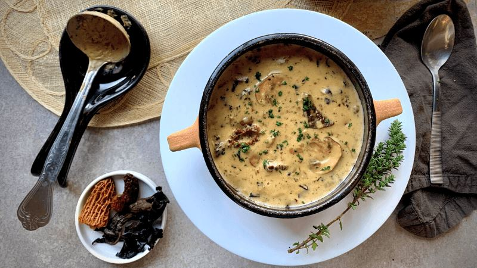

Mushroom Soup

Ingredients
- 25 g dried porcini mushrooms1 cup warm water
- 1 cup warm water
- 250 g mixed fresh mushrooms
- 1 small onion
- 2 tbsp oil
- 3 slices streaky bacon
- 4 cups water
- 4 medium potatoes
- 1 cup heavy (double) cream
- Step 1: Place dried mushrooms in a medium bowl and add warm water. Let them sit for 30 minutes. Remove the mushrooms from the liquid and finely chop them. Reserve the soaking liquid.
- Step 2: Cut the fresh mushrooms into even pieces. Finely chop the onion. Warm oil in a large frying pan, and add onion. Cook onion until it has softened. Add raw mushrooms and soaked mushrooms and cook for 5-7 minutes.
- Step 3: Finely chop bacon. Heat up a separate pan and add bacon pieces. Fry for 4-5minutes or until the bacon has browned and crisped up.
- Step 4: Peel and cube potatoes. Pour water in a medium pot on medium-high heat. Add potatoes. Bring the pot to aboil, and simmer for 5 minutes. Add onion and mushroom mixture. Simmer for 5 minutes or until potatoes are soft. Add cream, and bring soup to a boil. Add cooked bacon. Remove from heat and serve.
Enjoy your Mushroom Soup